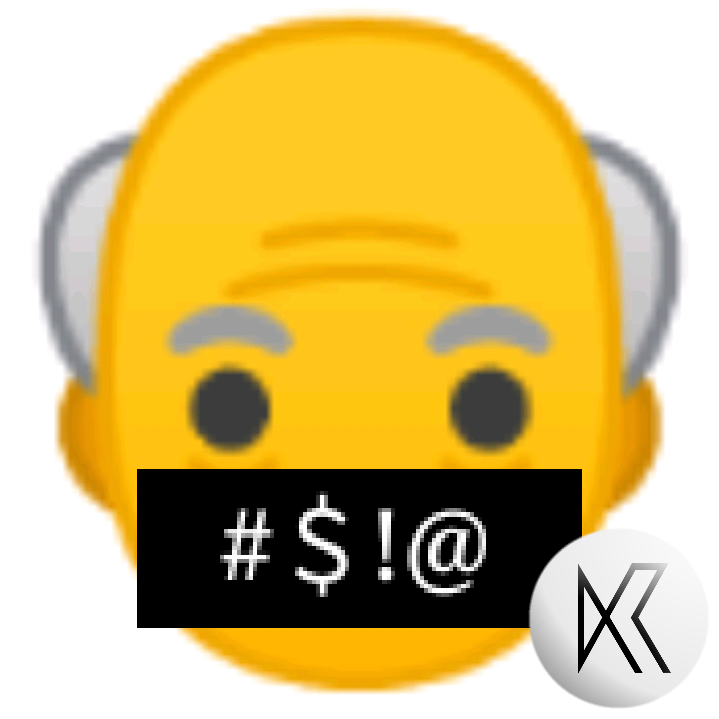

TaskBar 藏得最深的五个技能——你只用到了它 20% 的能力
把 Android 当桌面用的人不少，但真正把 TaskBar 用透的没几个。两块屏幕两套任务栏、强制窗口化、adb 隐藏开关……这些功能官方不宣传，翻设置翻半天才能摸到。
你以为 TaskBar 只是个浮在屏幕顶部的快捷启动栏？点一下出个开始菜单，仅此而已——对吧？
我装它的时候也是这么想的。翻了三天设置、踩了七八个 adb 命令的坑之后才发现：这玩意藏着一整套桌面操作系统级的能力，而且大多数人连它 20% 的功能都没摸到。它的官网把自己定位成「Android 的任务栏」，但实际上它在 Android 10+ 上能接管原生桌面模式 API，让你的手机插上显示器直接跑 PC 级多窗口。
下面五个功能，我打赌你最多知道两个。
一、两块屏幕，两套完全独立的任务栏
这是我最惊喜的发现。
Android 10 的桌面模式本身就支持外接显示器跑独立桌面界面，但绝大多数厂商（三星 DeX、华为 PC 模式）把这件事做成了「手机镜像到显示器」或者「整个系统切换到桌面」。TaskBar 不一样——它在原生 API 层面做了一个双屏分离。
先确保装的是最新版——从下载拿一份，老版本可能不支持双屏独立。然后连接 Type-C 转 HDMI 到显示器，在 TaskBar 设置里勾上「开启桌面模式」、跑两条 adb 授权命令之后：
- 显示器上：独立桌面，底部一条桌面任务栏，应用以可拖动缩放的窗口打开，Alt+Tab 切换
- 手机主屏上：原来的顶部任务栏照常工作，你继续单手刷微信、点外卖、拍照
- 两块屏幕互不干扰：显示器上开着浏览器查资料的同时，手机上打王者荣耀，谁也不影响谁

这个功能藏得真深——TaskBar 的设置页里甚至没有一个显眼的「开启双屏」按钮，它就是桌面模式启动后的默认行为。如果你之前用桌面模式发现「外接屏把手机也切成桌面了」，那是厂商自带的桌面模式在接管。关掉厂商的，只用 TaskBar，这块能力立刻解锁。
什么人用得上？经常带着平板或折叠屏去会议室的人，插个显示器就能一边投影一边在主屏上做笔记。什么人可以无视？只有一台设备、从不接外接屏的纯手机用户。
二、全屏应用自动折叠——看视频不再被挡
任务栏默认常驻屏幕顶部，看全屏视频或玩沉浸式游戏时，那条细条会特别碍眼。大多数人知道手动把它拖到一边，但很少有人发现 TaskBar 设置里有个折叠板块。
进去之后能看到三个触发选项：
- 空闲 N 秒后自动折叠（默认几秒不动就收成一条线）
- 全屏应用时自动折叠（更智能，检测到视频/游戏进入全屏模式立刻收）
- 手动切换（托盘上给个折叠按钮）
折叠态怎么唤出？从屏幕边缘向内滑——顶部折叠就从上往下滑，底部就从下往上滑，侧边同理。滑过来的一瞬间任务栏展开，手一松又收回去。
我之前一直手动隐藏任务栏看视频，每次都要进设置关总开关，看完再开回来。自从发现这个折叠功能，视频体验彻底干净了——而且它不会关掉 TaskBar，只是收成一条几乎看不见的细线，想看时间或切应用时一个滑动就够。
什么坑别踩？某些 ROM（特别是 MIUI 的安全中心）会回收悬浮窗权限，导致折叠滑不出来。遇到这种情况去系统设置里把 TaskBar 加入悬浮窗白名单就行。
三、强制窗口化——让不支持小窗的应用也能跑小窗
很多人用过 TaskBar 的自由窗口功能：长按应用图标，选择「自由窗口」，应用以小窗形式打开，可以拖动、缩放、最小化。但有个烦人的点——某些应用声明了「不可调整大小」，点自由窗口还是全屏。
翻设置翻到「窗口调整」板块，里面有个开关叫强制调整窗口大小。勾上之后，TaskBar 会无视应用自己的声明，强制把它塞进可缩放的窗口里。我用这个方法把一些老版本的银行 App、以及几个只能全屏跑的工具软件都拖成了小窗，在平板上终于能一边查资料一边操作了。
不过有副作用——强制缩放的应用有时会出现界面错位、按钮点不到的情况，这时候关掉这个开关，用原生方式打开那个应用就行。TaskBar 也承认这是个「尽力而为」的功能，不是所有应用都能完美适配。
另外注意：目标应用必须是未启动状态才能从小窗打开。如果它已经在后台全屏跑了，先从最近任务里划掉再点自由窗口。这是 TaskBar FAQ 里被问得最多的问题，官方几乎没在主设置页提这个前提条件。
四、Android 13+ 你还缺一条 adb 命令
跑桌面模式授权时，TaskBar 应用内会弹出两条 adb 命令，大多数人照着敲完就以为完事了。但如果你用的是 Android 13 或更高版本，还缺一条——缺少这条的话，桌面模式会显示「已启用」但外接屏还是镜像，死活不出独立桌面界面。
正确的三条命令是：
adb shell pm grant com.farmerbb.taskbar android.permission.WRITE_SECURE_SETTINGS
adb shell settings put global force_desktop_mode_on_external_displays 1
adb shell appops set com.farmerbb.taskbar WRITE_SECURE_SETTINGS allow前两条 TaskBar 会告诉你，第三条藏在它TaskBar文档的 FAQ 角落，没有任何显眼的入口提示你需要。Android 13 加强了 appops 权限管控，单靠 pm grant 不够，还得额外把 WRITE_SECURE_SETTINGS 加入应用的 appops 白名单。我当时就是少跑了这条，来回折腾了两个小时才在社区帖子里找到答案。
还有一个隐藏开关值得提——force_desktop_mode_on_external_displays 这条命令本身就是在往系统全局设置里写值。它的意思是「只要检测到外接显示器，就强制进入桌面模式而不是镜像」。如果你的设备 Type-C 支持视频输出但接上显示器只镜像，这条命令是关键。
五、它真的不联网——源码确认没有任何网络权限
这个不算功能，但算「隐藏事实」。TaskBar 作为一个常驻后台、显示悬浮窗、还能调用辅助功能服务的应用，你可能会好奇它会不会偷偷联网、收集数据。
不会。它没有声明 INTERNET 权限，源码里没有任何网络请求组件，没有广告 SDK，没有分析 SDK。辅助功能服务只用来模拟按键（Alt+Tab 切换窗口这类），不读取屏幕内容。甚至连版本检查都不走网络——更新提示直接在应用内显示版本号对比。
这点让我很惊讶，因为同类工具大多靠广告或数据收集变现，TaskBar 作为一个开源项目能做到零联网，在安卓生态里相当难得。它的下载渠道也很干净，GitHub 仓库直接发 APK，不上任何第三方应用市场。
最后说个小坑
把这些功能都开起来之后，你可能会发现耗电比之前略高。TaskBar 本身很轻量（前台服务 + 一个悬浮窗），但同时开启自由窗口和桌面模式时，系统要维护多套窗口状态，额外耗电大约 5%~10%——这是正常水平，不是 bug。如果耗电特别夸张，检查一下是不是在后台同时开了太多小窗实例。
总结一下：TaskBar 不是个花架子工具，它是把 Android 藏起来的原生桌面能力挖出来给你用的那把撬棍。两块屏幕独立运行、强制窗口化、折叠隐藏、adb 隐藏开关——这些功能没有官方教程带你一步步走，得自己翻设置、翻文档、翻 FAQ 才能摸到。把它用透了，你的 Android 设备（尤其是平板和折叠屏）的生产力上限能往上翻一倍。对了，文中提到的 adb 命令和设置项我踩坑时顺手在三个仓库补了实操记录，主仓库在GitHub，国内镜像放了Gitee和GitCode。